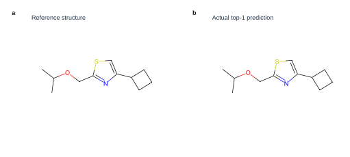

结构生成：IR + Raman + NMR
从分子谱图生成结构。
openSpec 模型通过 Vib2Mol 编码谱通道。生成使用 beam search 和分子匹配分数；检索比较嵌入，候选重排使用匹配头。
本教程读取保存的预测，解释输入输出字段，并评估结果。最后给出在新数据集上运行模型的命令。
import json, sys, io
from pathlib import Path
from IPython.display import display, Markdown, SVG
root = next((p for p in [Path.cwd(), *Path.cwd().parents] if (p / 'openmolspec_bench').is_dir()), None)
if root is None:
raise RuntimeError('Run from the cloned release repository; see Quick Start')
sys.path.insert(0, str(root / 'scripts'))
from documentation_evidence import load_evidence, compact, recompute, render
from documentation_content import results_table
evidence = load_evidence('vibrational.generation.hc')
print('Task:', evidence['task'])
print('Examples:', len(evidence['examples']))
Task: vibrational.generation.hc
Examples: 3
输入与输出
Field |
Meaning |
|---|---|
|
每个可见通道 1024 个强度点，按 400→4000 cm⁻¹ 排列，并采用 checkpoint 的归一化。 |
|
逐原子位移数组（ppm），参考 ID 和归一化必须与 checkpoint 一致。 |
Field |
Meaning |
|---|---|
|
解码后有效、规范化且去重的结构；完整输入路径使用 beam 10 和 ITM 重排。 |
|
分别报告生成与重排后的 top-k；不提供分子式。 |
查看下面的示例记录。长数组显示长度与前几个数值，下载 JSON 可获取完整数组。
for example in evidence['examples'][:3]:
print(json.dumps(compact(example), indent=2, ensure_ascii=False))
{
"target": "CC(C)OCC1=NC(C2CCC2)=CS1",
"raw_beams": {
"length": 10,
"first_values": [
"CC(C)OCC1=NC(C2CCC2)=CS1",
"CC(OCC1=NC(=CS1)C1CCC1)C",
"CC(OCC1=NC(C2CCC2)=CS1)C",
"CC(OCC1SC=C(N=1)C1CCC1)C",
"CC(OCC1SC=C(C2CCC2)N=1)C",
"C1CCC1C1=CSC(=N1)COC(C)C",
"C1CCC1C1=CSC(COC(C)C)=N1",
"C1(CCC1)C1=CSC(=N1)COC(C)C"
]
},
"unique_candidates": [
"CC(C)OCC1=NC(C2CCC2)=CS1"
],
"reranked": [
"CC(C)OCC1=NC(C2CCC2)=CS1"
],
"positive_probabilities": [
0.9998494386672974
],
"input": {
"ir": {
"length": 1024,
"first_values": [
0.005309805274009705,
0.005845691077411175,
0.006656948011368513,
0.007852676324546337,
0.009617962874472141,
0.012248368002474308,
0.016140293329954147,
0.02150154486298561
]
},
"raman": {
"length": 1024,
"first_values": [
0.004348924849182367,
0.0044013503938913345,
0.0046332464553415775,
0.005103452131152153,
0.005949858110398054,
0.007478467188775539,
0.010379075072705746,
0.01601901836693287
]
},
"nmr_h_shifts_ppm": {
"length": 17,
"first_values": [
0.8246750235557556,
0.8999750018119812,
0.9729750156402588,
1.1875749826431274,
1.5270750522613525,
1.6108750104904175,
1.7150750160217285,
1.8776750564575195
]
},
"nmr_c_shifts_ppm": {
"length": 11,
"first_values": [
19.662874221801758,
20.252174377441406,
22.792875289916992,
26.529874801635742,
31.90537452697754,
39.20387649536133,
70.01087188720703,
74.46617126464844
]
},
"nmr_reference_id": "tms-d6273f14fda3cb5e"
}
}
{
"target": "CCC(CC(C)C)C(=O)NC1CCC(=O)NC1",
"raw_beams": {
"length": 10,
"first_values": [
"CC(C)CC(C)NC(=O)C1CCC(=O)NCC1",
"CC(C)CC(C)C(=O)NC1CCC(=O)NCC1",
"CC(C)CC(C)C(=O)NC1CCCC(=O)NC1",
"CC(C)CC(C)NC(=O)C1CCC(=O)NC1",
"CC(C)CC(C)C(=O)NC1CCC(=O)NC1",
"CC(C)CC(C)NC(=O)C1CNC(=O)CCC1",
"CC(CC(C)C)NC(=O)C1CCC(=O)NCC1",
"CC(CC(C)C)NC(=O)C1CCC(NCC1)=O"
]
},
"unique_candidates": [
"CC(C)CC(C)NC(=O)C1CCNC(=O)CC1",
"CC(C)CC(C)C(=O)NC1CCNC(=O)CC1",
"CC(C)CC(C)C(=O)NC1CCCC(=O)NC1",
"CC(C)CC(C)NC(=O)C1CCC(=O)NC1",
"CC(C)CC(C)C(=O)NC1CCC(=O)NC1",
"CC(C)CC(C)NC(=O)C1CCCC(=O)NC1"
],
"reranked": [
"CC(C)CC(C)C(=O)NC1CCCC(=O)NC1",
"CC(C)CC(C)NC(=O)C1CCCC(=O)NC1",
"CC(C)CC(C)C(=O)NC1CCNC(=O)CC1",
"CC(C)CC(C)NC(=O)C1CCNC(=O)CC1",
"CC(C)CC(C)C(=O)NC1CCC(=O)NC1",
"CC(C)CC(C)NC(=O)C1CCC(=O)NC1"
],
"positive_probabilities": [
0.9992062449455261,
0.9985696077346802,
0.9968023300170898,
0.9835839867591858,
0.0004226609307806939,
2.5884039132506587e-05
]
}
{
"target": "N=C1N=C2C(=C(Cl)N1)N=CN2C1OC(CO)C(O)C1O",
"raw_beams": {
"length": 10,
"first_values": [
"N=C1N=C(O)C2=C(N1)N(C1OC(CO)C(O)C1O)C=N2",
"N=C1N=C(Cl)C2=C(N1)N(C1OC(CO)C(O)C1O)C=N2",
"N=C1N=C2C(=C(Cl)N1)N=CN2C1OC(CO)C(O)C1O",
"N=C1N=C2C(=C(O)N1)N=CN2C1OC(CO)C(O)C1O",
"N=C1N=C(O)C2=C(N1)N(C1OC(CO)C(O)C1O)C=N2Cl",
"N=C1N=C(O)C2=C(Cl)N=CN(C3OC(CO)C(O)C3O)C2=N",
"N=C1N=C(O)C2=C(Cl)N(C3OC(CO)C(O)C3O)C=NN12",
"N=C1N=C(O)C2=C(Cl)N=CN2C2OC(CO)C(O)C2O"
]
},
"unique_candidates": [
"N=C1N=C(O)C2=C(N1)N(C1OC(CO)C(O)C1O)C=N2",
"N=C1N=C(Cl)C2=C(N1)N(C1OC(CO)C(O)C1O)C=N2",
"N=C1N=C2C(=C(Cl)N1)N=CN2C1OC(CO)C(O)C1O",
"N=C1N=C2C(=C(O)N1)N=CN2C1OC(CO)C(O)C1O",
"N=C1N=C(O)C2=C(Cl)N(C3OC(CO)C(O)C3O)C=NN21",
"N=C1N=C(O)C2=C(N=CN2C2OC(CO)C(O)C2O)N1"
],
"reranked": [
"N=C1N=C(Cl)C2=C(N1)N(C1OC(CO)C(O)C1O)C=N2",
"N=C1N=C(O)C2=C(Cl)N(C3OC(CO)C(O)C3O)C=NN21",
"N=C1N=C2C(=C(Cl)N1)N=CN2C1OC(CO)C(O)C1O",
"N=C1N=C2C(=C(O)N1)N=CN2C1OC(CO)C(O)C1O",
"N=C1N=C(O)C2=C(N=CN2C2OC(CO)C(O)C2O)N1",
"N=C1N=C(O)C2=C(N1)N(C1OC(CO)C(O)C1O)C=N2"
],
"positive_probabilities": [
0.9998570680618286,
0.9998118281364441,
0.9998034834861755,
0.9992008805274963,
0.9991375207901001,
0.9991245865821838
]
}
评估预测
生成报告 top-k 准确率，排序报告 Recall@k 与 MRR。
表格给出每次运行的数据集与指标。后续代码从绘图使用的预测值重新计算汇总结果。
display(Markdown(results_table(evidence, False)))
print(json.dumps(recompute(evidence), indent=2, ensure_ascii=False))
| Dataset / scope | Model / variant | Metric | Value | | --- | --- | --- | ---: | | recorded sample | recorded model | exact_canonical_top1 | 0.75 | | recorded sample | recorded model | exact_canonical_top3 | 0.890625 | | recorded sample | recorded model | exact_canonical_top5 | 0.890625 | | recorded sample | recorded model | exact_canonical_top10 | 0.890625 | | recorded sample | recorded model | valid_smiles_fraction | 0.959375 | | recorded sample | recorded model | duplicate_valid_beams | 455 | | recorded sample | recorded model | examples | 64 | | recorded sample | ITM reranked | exact_canonical_top1 | 0.6875 | | recorded sample | ITM reranked | exact_canonical_top3 | 0.84375 | | recorded sample | ITM reranked | exact_canonical_top5 | 0.890625 | | recorded sample | ITM reranked | exact_canonical_top10 | 0.890625 |
{
"top1_matches_reference_this_example": true
}
查看结果图
参考结构与生成候选。
比较预测与参考，查看返回的结构或峰位置。图由上方读取的记录直接生成。
import matplotlib.pyplot as plt
for example_index in range(1):
figure = render('vibrational.generation.hc', evidence, example_index=example_index)
image = io.StringIO()
figure.savefig(image, format='svg', metadata={'Date': None})
display(SVG(image.getvalue()))
plt.close(figure)

运行模型
按任务指南配置环境和权重，在 benchmark runner 中选择本任务，即可评估自己的数据集。
python -m openmolspec_bench run --workspace /path/to/OpenMolSpec \
--tasks vibrational.generation.hc --limit 8 --output results/vibrational-generation-hc.json
参考文献
OpenMolSpec contributors. openSpec models and benchmark training workflows. Source archive, v1.0 (2026). Source
OpenMolSpec contributors. OpenMolSpec: Chemical spectroscopy datasets, models and learning workflows. Software release v1.0 (2026). Source
Yuan, M., Zou, Z. & Hu, W. QMe14S, A Comprehensive and Efficient Spectral Dataset for Small Organic Molecules. arXiv:2501.18876 (2025). Source
Zou, Z., Zhang, Y., Liang, L., Wei, M., Leng, J., Jiang, J., Luo, Y. & Hu, W. A deep learning model for predicting selected organic molecular spectra. Nature Computational Science 3, 957–964 (2023). doi:10.1038/s43588-023-00550-y. Source